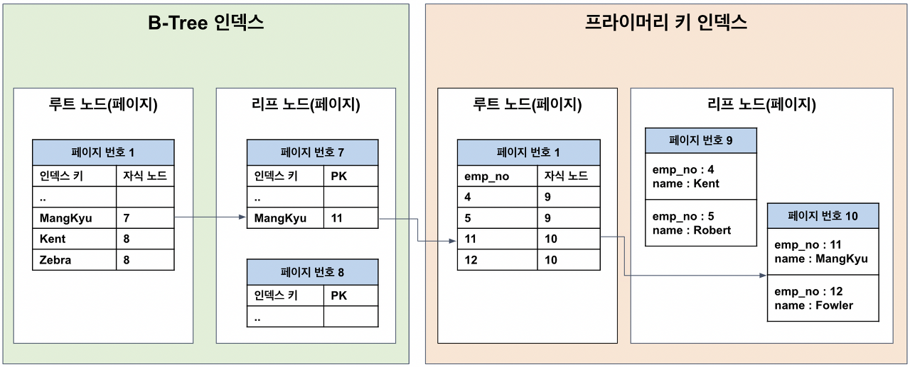
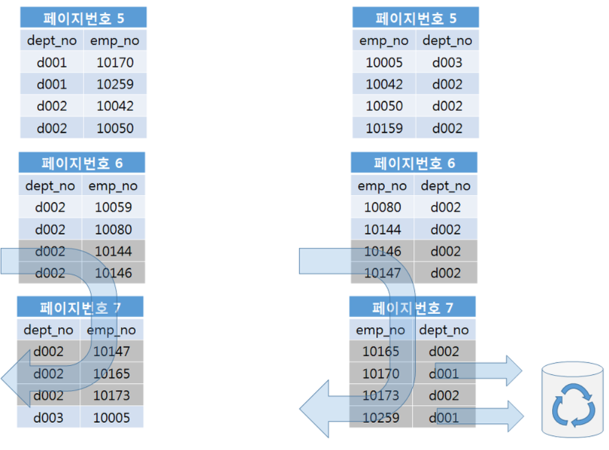
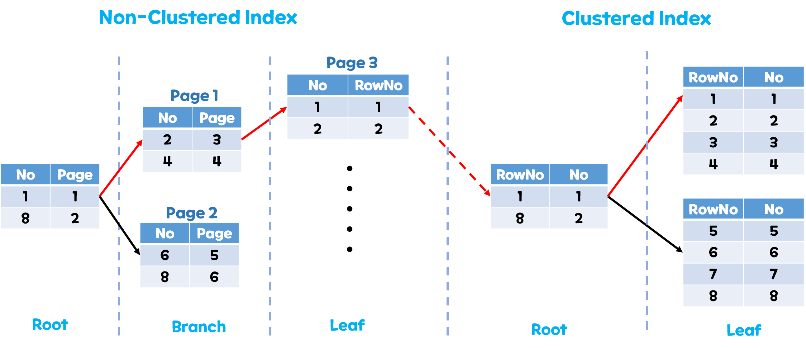

8.1 디스크 읽기 방식
8.1.1 HDD 와 SSD
- 순차 I/O 의 경우 HDD 와 SSD 의 성능차이가 거의 없다.
- 랜덤 I/O 시 차이가 극명해지는데, 당연히 SSD 성능이 좋다.
8.1.2 랜덤 I/O 와 순차 I/O
- 랜덤 I/O 는 3개의 페이지를 저장해야하는 상황에서 3번의 시스템 콜을 요청한다. 디스크 헤드가 3번 움직이게 된다.
- 순차적 I/O 의 경우 3개의 페이지를 한번의 시스템 콜에 처리해 디스크 헤드가 1 번 움직인다.
- SSD 는 HDD 보다 랜덤 I/O 와 순차 I/O의 성능 차이가 적다.
- 인덱스 레인지 스캔은 랜덤 I/O 를 사용하며, 풀 테이블 스캔은 순차 I/O를 사용한다.
8.2 인덱스란
- 인덱스 : sorted list 와 유사해 정렬되어 있으며, 리프 노드에 레코드의 주소 값을 갖는다.
- 데이터 파일 : array list 와 같이 정렬되어 있지 않다
- DBMS 는 인덱스를 사용해 데이터
insert,update,delete시 항상 정렬 작업을 해야 하기 때문에select에 비해 속도가 느리다. 즉, DBMS 는 읽기 속도를 위해 나머지 작업의 처리 속도를 희생한 셈이다. - 전문 검색용 인덱스, 공간 검색용 인덱스 등 으로 인덱스를 분류할 수 있다.
8.3 B-Tree 인덱스
8.3.1 구조 및 특성

- 루트 노드, 브랜치 노드, 리프 노드로 구성된다.
- 리프 노드는 실제 데이터 레코드의 주소로 이루어져 있다.
- 인덱스는 항상 정렬되어 저장되어 있지만 데이터 파일의 레코드는 정렬되어 있지 않다.
- MyISAM : 리프 노드의 값에 데이터 파일에 실제 저장된 레코드 주소를 저장한다.
- InnoDB : 리프 노드의 값에 pk를 저장한다. 데이터 파일에는 pk를 키로 갖는 B-Tree가 존재한다.
- pk index 의 리프 노드에는 레코드 값을 저장하고 있다.
8.3.2 B-Tree 인덱스 키 추가 및 삭제
인덱스 키 추가
-
B-Tree 특성으로 인해 리프노드에 추가될 때 브랜치 노드로 분리되어야 하는 경우가 발생해 쓰기 작업 비용이 많이 발생한다.
-
InnoDB 에서 성능 개선을 위하여 인덱스 키 추가 작업을 체인지 버퍼 에 저장한 후 처리를 지연시킬 수 있다.
[4. 아키텍처](/%EC%B1%85/real%20mysql%201/4.%20%EC%95%84%ED%82%A4%ED%85%8D%EC%B2%98.md#4.2.10 체인지 버퍼) -
만약 추가하는 인덱스 키가 unique, pk 라면, 중복 체크가 필요하기 때문에 즉시 B-Tree 에 추가한다.
인덱스 키 삭제
- 리프 노드를 찾아서 삭제
- 버퍼링 되어 지연 처리 가능
인덱스 키 변경
- 기존의 키 값을 삭제 후 새로운 키를 추가한다.
- 체인지 버퍼를 사용하여 지연 처리 된다.
인덱스 키 검색
update, delete시에도 레코드 검색을 위해 사용한다.- 부등호 쿼리 탐색이 가능하다.
- 인덱스를 구성하는 일부 값으로만 검색하는 것은 불가능하다.
”DataBase” 인덱스를 찾기 위해 “Data” 만으로 검색하는 경우 - 넥스트 키락을 사용해 잠금을 하는 InnoDB 에서 적절한 인덱스가 존재하지 않으면 불필요한 잠금이 요구된다.
8.3.3 B-Tree 인덱스 사용에 영향을 미치는 요소
인덱스 키 값의 크기
- 디스크에 저장하는 가장 기본이 되는 단위를 block ( page ) 라 한다.
- 인덱스 역시 page 단위를 사용해 관리된다.
- Page는 기본값 16KB 를 갖는다. 즉 페이지 하나에는 16KB / (키 값 크기+주소 값 크기) 개수 만큼 키를 저장할 수 있다.
- 키의 값이 커짐에 따라 페이지 하나에 저장할 수 있는 키의 개수가 줄어들고 결국 Disk I/O 를 두번 처리해야하는 상황이 발생한다.
- 또한, 버퍼 풀에 인덱스를 페이지 단위로 캐시하는데 인덱스 키 값이 커지면 캐시해둘 수 있는 레코드 수도 줄어들어 메모리 효율을 떨어치는 결과를 초래한다.
B-Tree 깊이
- 키 값이 커지면 인덱스 페이지가 담을 수 있는 인덱스 키 값의 개수가 적어지고, 이로 인해 같은 레코드 건수라도 더 많은 B-tree 깊이가 요구된다.
- B-Tree 깊이의 증가는 페이지의 증가를 의미하고 이는 더 많은 Disk I/o 가 발생한다.
- 인덱스 키 값의 크기는 가능한 작은것이 성능에 유리하다.
선택도 ( 기수성 )
- 기수성 : 인덱스 키 값 가운데 유니크한 값의 수를 의미한다.
- 키 값에 중복된 값과 기수성은 반비례한다.
중복 키 값이 많으면 기수성은 낮아진다. - 기수성이 높으면 검색 대상이 적음을 의미함으로 처리 속도가 향상된다.
읽어야 하는 레코드의 건수
- 옵티마이저는 인덱스를 이용해 레코드를 읽는 작업은 테이블에서 직접 레코드를 읽는 작업보다 4~5배 더 많은 비용이 든다 예측한다.
- 테이블의 전체 20%~25% 이상 레코드를 읽어야하는 경우 인덱스를 사용하지 않고 테이블을 모두 직업 읽어 필요한 레코드만 읽어 필터링 하는 방식이 더 효율적이다.
8.3.4 B-Tree 인덱스를 통한 데이터 읽기
인덱스 레인지 스캔
-
검색해야할 인덱스의 범위가 정해졌을 때 사용된다.
-
인덱스 탐색 : 브랜치 노드를 통해 시작 범위의 리프노드를 찾는다.
-
인덱스 스캔 : 시작 리프 노드부터 시작해 리프노드들을 스캔한다. 인덱스의 범위 끝의 리프 노드에 도달하면 중단한다.
-
인덱스 레인지 스캔 절차
- 인덱스 탐색
- 인덱스 스캔
- 레코드가 저장된 페이지를 가져온다.
-
3번 과정에서 테이블 풀 스캔 [8. 인덱스](/%EC%B1%85/real%20mysql%201/8.%20%EC%9D%B8%EB%8D%B1%EC%8A%A4.md#읽어야 하는 레코드의 건수) 가 실행될 수 있다.
-
커버링 인덱스를 사용하여 3번 과정이 생략될 수 있다.
커버링 인덱스
쿼리를 충족시키는데 필요한 모든 데이터를 가지고 있는 인덱스를 커버링 인덱스(Covering Index)라 한다.
인덱스 풀 스캔
- 리프 노드의 맨 앞 혹은 뒤에서부터 링크드 리스트를 타고 리프노드들을 처음부터 끝까지 스캔하는 방식
- 데이터 검색을 위한 최적의 인덱스가 없을 때 차선으로 선택해 전체 데이터 중 필터된 데이터를 반환
- 인덱스의 전체 크기는 테이블 자체의 크기보다는 작으므로 테이블 풀 스캔 보다 적은 디스크 I/O 로 쿼리 처리 가능
루스 (Loose) 인덱스 스캔
- 오라클의 인덱스 스킵 스캔 과 유사하게 동작
- 인덱스 레인지 스캔과 비슷하게 동작하며 스캔 도중 필요하지 않은 인덱스 키 값은 스킵 하고 다음으로 넘아감
- 인덱스 레인지 스캔, 인덱스 풀 스캔 은 tight index scan 으로 분류
- group by 또는 min(),max() 집합함수 최적화에 사용
인덱스 스킵 스캔
- 다중 칼럼 인덱스를 갖는 테이블에서 인덱스를 where 절에 사용할 때, 인덱스의 두번째 칼럼을 조건절에 사용할때 사용되는 최적화 기능이다.
- 인덱스 스킵 스캔 적용시 첫번째 칼럼의 값 별로 쿼리 문을 여러개 실행한다
- 선행 칼럼의 유니크한 값 개수가 적을 경우에만 사용가능한 최적화 이다.
gender,birth_date 순으로 인덱스가 설정되된 employees 테이블 을 조회하는 예시이다. 옵티마이저에 의해 아래 쿼리와 비슷한 형태로 수행된다.
select gender,birth_date from employees where birth_date>='1965-02-01'
select gender,birth_date from employees where gender='M' AND birth_date>='1965-02-01'
select gender,birth_date from employees where gender='W' AND birth_date>='1965-02-01'인덱스 스킵 스캔 제약조건
- where 조건절의 첫번째 칼럼의 유니크한 값의 개수가 적어야한다.
위의 쿼리와 비슷하게 최적화를 수행해야하는데 유니크한 값의 개수가 많으면 첫번째 인덱스를 스캔해야할 시작 지점을 검색하는데 비용이 많이 들기 때문 - 쿼리가 인덱스에 존재하는 칼럼만으로 처리 가능해야한다.
커버링 인덱스가 불가능한 경우 테이블 풀 스캔을 사용하게 된다.
8.3.6 B-Tree 인덱스의 정렬 및 스캔 방향
인덱스의 정렬
CREATE index ix_teamname_userscore ON employees (team_name ASC,user_score DESC);인덱스 스캔 방향
-
인덱스는 내림차순 혹은 오름차순으로정렬되어 저장되는데 스캔 시에 인덱스를 어느 방향으로 읽을지 옵티마이저가 실시간으로 만들어내는 실행 계획에 의해 결정딘다.
-
Forward index scan(Forward scan) : 인덱스 키의 크고 작음에 관계없이 인덱스 리프 노드의 왼쪽 페이지부터 오른쪽으로 스캔 -
Backward index scan(Backward scan) : 인덱스 키의 크고 작음에 관계없이 인덱스 리프 노드의 오른쪽 페이지부터 왼쪽으로 스캔
내림 차순 인덱스
- ASC 로 정렬된 index 를
order by desc로 조회하는 쿼리는backward index scan을 사용해 데이터를 조회한다. order by asc시forward index scan을 통해 조회하는데,backward index scan보다 나은 성능을 보인다. 이유는 아래와 같다.- 페이지 잠금이
Forward index scan에 적합한 구조 - 페이지 내에서 인덱스 레코드는 단방향으로만 연결된 구조 (Forwarded single linked link)
- 페이지 잠금이
- 내림 차순으로 조회해
backward index scan을 사용하게되는 쿼리가 빈번한경우 내림 차순 인덱스를 고려해야 한다.
8.3.7 B-Tree 인덱스의 가용성과 효율성
비교 조건의 종류와 효율성
- 다중 칼럼 인덱스에서 각 칼럼의 순서와 그 칼럼에 사용된 조건이 동등 비교(”=“)인지 아니면 크다(”>”) 또는 작다(”<“)와 같은 범위 조건인지에 따라 각 인덱스 칼럼의 활용 형태가 달라지며 그 효율 또한 달라진다.

-
케이스 A : dept_no + emp_no
케이스 A의 경우 “dept_no = d002 AND emp_no>=1004”인 레코드를 찾고, 그 이후에는 dept_no가 ‘d002’가 아닐 떄까지 인덱스를 그냥 쭉 읽기만 하면 된다. -
케이스 B : empno dept_no
케이스 B 우선 “emp_no>=10144” AND dept_no=‘d002’인 레코드를 찾고, 그 이후 모든 레코드에 대해 dept_no=‘d002’인지 비교하는과정을 거쳐야 한다. -
작업 범위 결정 조건 : 케이스 A의 두 조건과 같이 작업의 범위를 결정하는 조건을
-
필터링 조건(체크 조건) : 케이스 B의 dept_no=‘d002’ 조건과 같이 비교 작업의 범위를 줄이지 못하고 단순히 거름종이 역할만 하는 조건을 “필터링 조건 또는 체크 조건 이라고 표현
작업 범위 결정 조건 이 많을 수록 쿼리 처리 성능이 좋아진다.
인덱스의 가용성
- B-Tree 인덱스는 왼쪽값에 기준해서 (Left-most) 오른쪽 값이 정렬돼 있다. 칼럼 내부 뿐만 아니라 다중 칼럼 인덱스에도 적용되는 규칙이다.
- 인덱스 내부에서 또한 left-most 에 따라 정렬 되므로 first_name 이 index 로 설정된 아래의 쿼리는 인덱스의 효과를 얻을 수 없다.
select * from employees where first_name like '%mer';
// 왼 쪽부터 한 글자씩 비교해가며 레코드를 찾아야 하는데 %mer 은 왼쪽 부분이 항상 다르다.- 다중 칼럼 인덱스에서 또한 left-most 에 따라 정렬 된다. where 절에 비교 조건으로 사용되는 인덱스가 인덱스의 n 번째 값을 사용한다면, n-1 번째 인덱스로 우선 정렬되는 인덱스 특성상 (left-most) 인덱스를 효율적으로 사용할 수 없다.
가용성과 효율성 판단
기본적으로 B-TREE 인덱스의 특성상 다음 조건에서는 사용할 수 없다. 여기서 사용할 수 없다는 것은 작업 범위 결정 조건으로 사용할 수 없다는 것을 의미
하며, 경우에 따라서는 체크 조건으로 인덱스를 사용할 수는 있다.
- NOT-EQUAL로 비교된 경우 (”<>”, “NOT IN”, “NOT BETWEEN”, “IS NOT NULL”)
- LIKE ’%??’ (앞부분 비교가 아닌 뒷부분 일치) 형태로 문자열 패턴이 비교된 경우
- 스토어드 함수나 다른 연산자로 인덱스 칼럼이 변형된 후 비교된 경우 (ex. SUBSTRING, DAYOFMONTH)
- NOT-DETERMINISTIC 속성의 스토어드 함수가 비교 조건에 사용된 경우
- 데이터 타입이 서로 다른 비교(인덱스 칼럼의 타입을 변환해야 비교가 가능한 경우)
- 문자열 데이터 타입의 콜레이션이 다른 경우(UTF8, EUCKR)
index (column_1,column_2...column_n)-
작업 범위 결정 조건으로 인덱스를 사용하지 못하는 경우
- column_1 칼럼에 대한 조건이 없는 경우
- column_1 칼럼의 비교 조건이 사용불가 조건 중 하나인 경우
-
작업 범위 결정 조건으로 인덱스를 사용하는 경우 (2<i<n)
- column1~column(i-1) 칼럼까지 동등 비교(=,in) 로 비교
- column_i 칼럼에 대해 다음연산자 중 하나로 비교
- Equal(”=” 또는 “IN”)
- 크다 작다 형태(”>” 또는 ”<”)
- LIKE로 좌측 일치 패턴(LIKE ‘승환%’)
select .... where column_1 = 1 AND column_2 In (1,2,3) AND column_3 <> 2
// column_1,2 는 작업 범위 결정 조건으로 사용된다.column_3 은 인덱스 사용 불가 조건중 하나 이므로 필터링 조건에 해당한다.
select .... column_1 = 1 AND column_2 <> 1 AND column_3 = 1
// column_1 까지만 작업 범위 결정 조건으로 사용된다.column_2의 <> 조건 때문에 그 이후의 칼럼은 인덱스 사용 범위에서 제외된다.효율적인 인덱스 설계는 두 가지 요소를 모두 고려해야 한다.
작업 범위 조건:
쿼리에서 자주 사용되는 컬럼과 조건을 기준으로 설계.
선두 컬럼부터 조건을 만족할 수 있도록 순서를 지정.
기수성:
선두 컬럼은 가능한 높은 기수성을 가지도록 선택.
낮은 기수성을 가진 컬럼은 복합 인덱스의 후순위에 위치.
다중 칼럼 인덱스에서 기수성이 낮은 (범위가 큰) 칼럼을 선두 위치 시키자 (단, 선두로 설정한 칼럼을 쿼리에서 사용해야 인덱스를 사용할 수 있다.)
8.5 전문 검색 인덱스
- 전문 검색 : 문서의 내용 전체를 인덱스화 해서 특정 키워드가 포함된 문서를 검색하것
- B-Tree 인덱스 사용 불가능
- 전문 검색 인덱스를 사용해야함
8.5.1 인덱스 알고리즘
- 전문 검색 에는 문서 본문 내용에서 검색하게 될 키워드를 분석해 내고 빠른 검색용으로 사용할 수 있게 키워드로 인덱스를 구축함
- 키워드 인덱싱 방식에 따른 분류
- 단어 어근 분석 알고리즘
- n-gram 분석 알고리즘
어근 분석 알고리즘
- 불용어 (stop word) 처리
- 검색에서 별 가치가 없는 단어를 모두 제거하는 작업
- 어근 분석 ( stemming )
- 검색어 단어의 뿌리인 원형을 찾는 작업
- 한글이나 일본어는 단어의 변형이 거의 없어 문장의 형태소를 분석해 명사,조사를 구분하는 기능이 중요
- 형태소 분석은 문장을 이해하는 알고리즘
n-gram 알고리즘
- n-gram 은 단순히 키워드를 검색해내기 위한 인덱싱 알고리즘
- 리소스가 많이 들어가는 형태소 분석 알고리즘의 단점을 보완하기 위해 도입됨
- 본문을 무조건 몇 글자씩 잘라서 인덱싱해 인덱스의 크기가 크다.
- n-gram 의 n은 인덱싱할 키워드의 최소 글자 수 ( n=2 일때, bi-gram)
- 절차
- 문장을 단어로 분리 후 n크기의 글자 수 만큼 중첩해 토큰으로 분리한다.
- n=2 일떄,
"question"은qu,ue,es,st,ti,io,on으로 분리된다. - 토큰 집합 중 불용어와 같거나 포함하는 경우 제외한다.
- 남겨진 토큰을 B-Tree (혹은 merge) 트리에 저장한다.
불용어 변경 및 삭제
- 불용어를 포함하는 토큰들이 삭제되는 과정에서
"ha"가 불용어"a"를 포함해 삭제되는 상황이 존재해 불용어 처리를 무시하거나 사용자 정의 불용어를 사용하는 방법이 존재한다.
8.5.2 전문 검색 인덱스의 가용성
- Mysql 전문 검색
- 추가 자료
- 쿼리 문장이 전문 검색을 위한 문법
match...againt사용
select * from tb_test where match(doc_body) against('애플' IN BOOLEAN MODE)- 테이블 전문 검색 대상 칼럼에 대해서 전문 인덱스 보유
create table tb_test(
doc_id INT auto_increment,
doc_body TEXT,
PRIMARY KEY(doc_id),
FULLTEXT KEY fx_docbody(doc_body) WITH PARSER ngram
) Engine=innoDB;8.7 멀티 밸류 인덱스
- 하나의 데이터 레코드가 여러개의 키 값을 가질 수 있는 형태의 인덱스
- 정규화에 위배되지만, json 의 배열타입 필드에 대한 인덱싱을 지원하기 위해 지원하기 시작
하나의 레코드에 여러개의 데이터 값을 저장 후 그 값을 인덱싱 하므로 제1정규형 위배 - 아래의 함수를 사용해야 옵티마이저가 멀티 밸류 인덱스를 인식
- member of()
- json_contains()
- json_overlaps()
CREATE TABLE user (
id BIGINT AUTO_INCREMENT PRIMARY KEY,
test_json JSON,
INDEX index1( (CAST(test_json -> '$.test1' AS UNSIGNED ARRAY))))INDEX index1( (CAST(test_json -> '$.credit_scores' AS UNSIGNED ARRAY))“test1” 필드에 대해 index 생성
| 연산자 | 설명 | 반환 값 | 예시 값 |
|---|---|---|---|
| -> | JSON 데이터에서 특정 값을 조회 | JSON 형태 | “부산” |
| ->> | JSON 데이터에서 특정 값을 조회 | 일반 텍스트 형태 | 부산 |
8.8 클러스터링 인덱스
8.8.1 클러스터링 인덱스 (클러스터링 테이블)
- InnoDB 에서만 지원한다.
- 비슷한 값은 동시에 조회하는 경향이 많다는 점에 착안함
- pk (클러스터링 키) 대해서만 적용된다. 즉, 테이블당 1 개 존재한다.
- pk 값이 비슷한 레코드끼리 묶어서 저장하는 인덱스 방식
- pk 값에 의해 레코드가 저장되는 물리 저장 위치가 결졍 및 변경된다.
- B-tree의 리프노드와 달리 클러스터링 인덱스의 리프 노드는 레코드의 모든 값이 저장되어 있다.
8.8.2 세컨더리 인덱스에 미치는 영향

- 세컨더리 인덱스의 리프노드의 값은 클러스터 키 값을 가지고 있다. 그래서 세컨더리 인덱스 값을 조건절로
select쿼리를 수행하면 세컨더리 인덱스에서 클러스터 키 값을 확인후, 클러스터 인덱스를 검색해 최종 결과를 받아온다. - 만약, 클러스터링 되지 않는 MyISAM, MEMORY 테이블 ( 단말 노드에 레코드의 실제 저장위치를 내부적으로 기록하는 ROWID 값을 사용한다.) 에서 클러스터링 키 값이 변경되면 해당 테이블의 모든 인덱스에 저장된 주소 값을 변경해야한다.
os 가상 페이지 페이지 테이블과 클러스터링 인덱스 유사점
메모리의 물리 주소 위치와 disk 의 물리주소 위치를 저장하고 있는 테이블이라는 점에서 유사하다. 즉 논리적인 주소를 제공해 하드웨어와의 결합도를 낮춘다.
논리 주소를 사용하는 만큼 동적 변경에 용이하다.
8.8.3 클러스터링 인덱스 장단점
| 장점 | 단점 |
|---|---|
| pk 로 검색시 처리 속도가 빠르다. | 세컨더리 인덱스가 클러스터링 키 값을 가지므로 키 값의 pk 크기에 비례해 커진다. |
| 테이블의 모든 세컨더리 인덱스가 pk 를가지고 있어 인덱스만으로 처리되는 경우가 많다. | 세컨더리 인덱스 사용시 클러스터링 인덱 한번더 검색해야하는 오버해드 존재 |
insert 프라이머 키에 의해 레코드의 저장 위치가 결정돼 성능이 저하된다. | |
pk키를 변경시 레코드 insert, delete 작업이 필요해 처리 성능이 느리다. |
8.9 유니크 인덱스
8.9.1 유니크 인덱스와 일반 세컨더리 인덱스 비교
- 유니크 제약 조건 설정시 유니크 인덱스가 생성된다.
- MyISAM,MEMORY 테이블에서 not null 유니크 키는 pk 와 동일하다.
- InnoDB 에서 pk 는 클러스터링 키의 역할도 하므로 유니크 인덱스와 근본적으로 다르다.
인덱스 읽기
- 세컨더리 인덱스에서 칼럼 값을 비교하는 작업이 한번 더 추가된다. 그러나 cpu 작업이므로 실질적인 성능 차이가 없다.
- 세컨더리 인덱스의 결과 값의 개수 n 개 만큼 n 배 차이 난다.
- 실행 계획이 서로 다르다는 차이점이 있다.
인덱스 쓰기
- 새로운 레코드 삽입, 인덱스 칼럼 값 수정 시 인덱스 쓰기 작업이 필요하다.
- 유니크 인덱스에서는 중복된 값의 존재 유무를 확인하는 작업이 한번 더 필요해 세컨더리 인덱스의 쓰기보다 느리다.
- 유니크 인덱스에서는 읽기 잠금, 쓰기 잠금이 필요해 교착 상태가 빈번하다.
- 인덱스 키를 버퍼링 하기 위해 체인지 버퍼를 보통 사용해 성능을 향상 시키는데, 유니크 인덱스는 중복 체크를 해야 하므로 체인지 버퍼를 사용하지 못해 성능이 느리다.
8.9.2 유니크 인덱스 사용 시 주의사항
- 유일성을 꼭 보장해야 하는 경우에만 유니크 인덱스 생성
- 유니크 인덱스는 일반 인덱스와 같은 역할을 하므로 중복해 인덱스를 생성하지 않아도 된다.
8.9 외래키
- 외래키 제약 조건 설정 시 연관되는 테이블의 칼럼에도 자동으로 인덱스가 생성된다.
8.10.1 자식 테이블의 변경이 대기하는 경우
- 자식 테이블에서 외래키 칼럼의 변경 시 부모 테이블의 확인이 필요하다.
- 이때, 부모 테이블에 해당 레코드에 쓰기 잠금이 걸려 있다면, 자식 테이블을 변경하는 트랜잭션은 부모테이블을 변경하는 트랜잭션이 종료될 때 까지 기다려야한다.
- 자식 테이블에서 외래키를 변경하지 않고 다른 칼럼을 변경 시에 잠금 경합은 발생하지 않는다.
8.10.2 부모 테이블 변경 작업이 대기하는 경우
- 자식 테이블을 변경하는 트랜잭션이 쓰기 잠금을 획득한 후종료되지 않은 상황이다.
- 이때 다른 트랜잭션에서 변경중인 자식 레코드의 외래키 값을 갖는 부모 테이블 레코드를 변경하는 경우 ( on delete cascade, on update cascade 적용 시 ) 자식 테이블에 걸려있는 쓰기 잠금을 대기해야한다.
- 자식 테이블에 레코드가 추가되는 경우 부모 테이블에 해당 참조 키가 존재하는지 확인한다. 이때, 읽기 잠금이 걸려 발생하는 잠금 경합을 고려해야 한다.